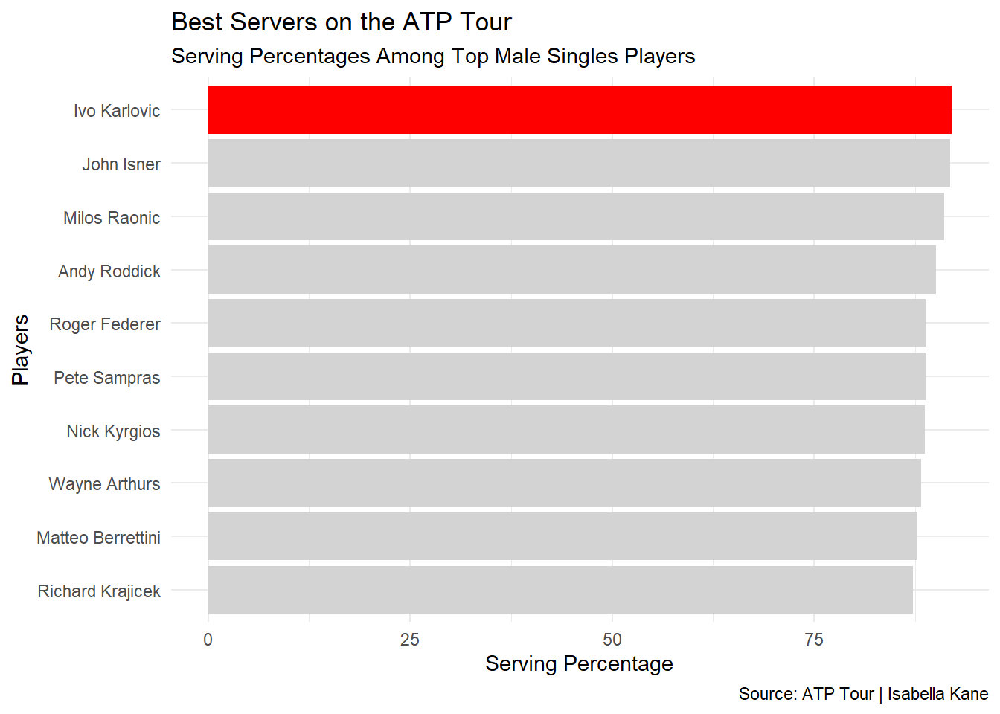
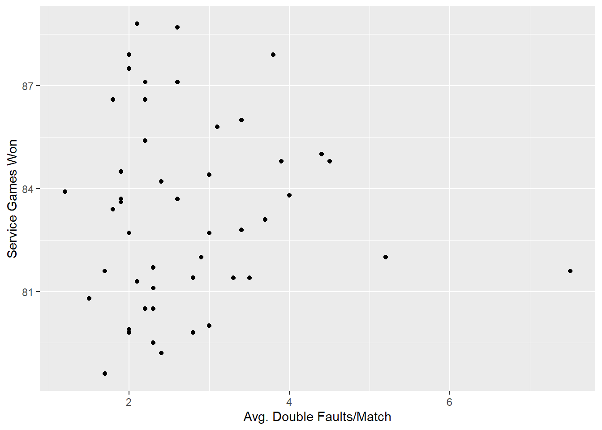
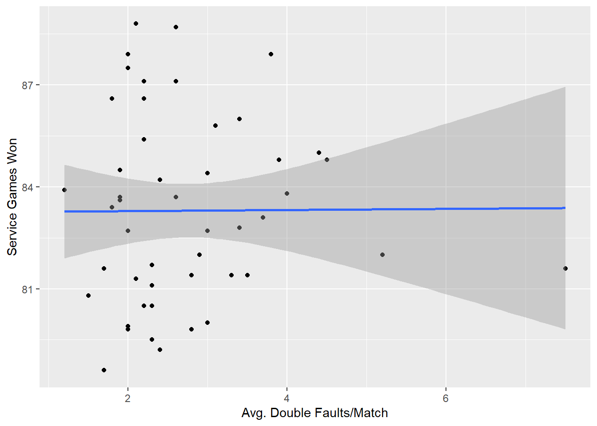
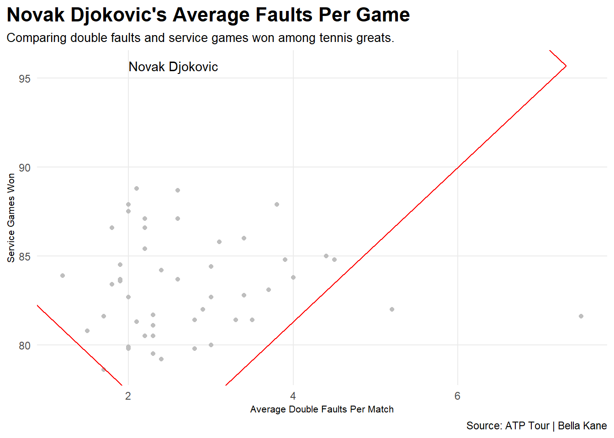
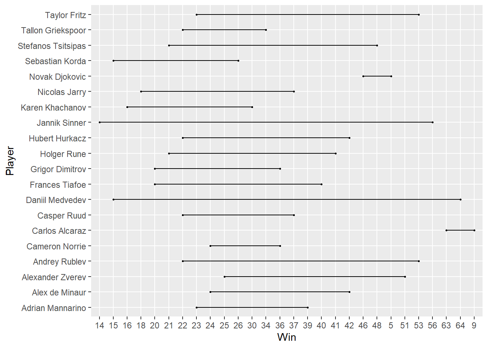

Does serving affect your ability to be a great tennis player?
Ivo Karlovic has the best serving percentage with 92% on all services including clay, hard, and grass. His career service games won is 8,845, though Karlovic is no longer an active player. Though Karlovic isn’t in the top 50 list of Wins and Losses, which can tell us that even if you are a really good server, it doesn’t necessarily make you a great tennis player. I will also discuss this later with Novak Djokovic, who ranks in the top 15 of servers. The other great servers here are John Isner, Milos Raonic, Andy Roddick, Roger Federer, Pete Sampras, Nick Kyrgios, Wayne Arthurs, Matteo Berrettini, and Richard Krajicek. The top 10 servers fall between 75%-92% in serving percentages. Counting just active players, John Isner would be the best server. Roddick, Federer, Sampras, Arthurs, and Krajicek are the other inactive players on this list, leaving four active players as the best servers of all time.
library(tidyverse)
── Attaching core tidyverse packages ──────────────────────── tidyverse 2.0.0 ──
✔ dplyr 1.1.2 ✔ readr 2.1.4
✔ forcats 1.0.0 ✔ stringr 1.5.0
✔ ggplot2 3.4.3 ✔ tibble 3.2.1
✔ lubridate 1.9.2 ✔ tidyr 1.3.0
✔ purrr 1.0.2
── Conflicts ────────────────────────────────────────── tidyverse_conflicts() ──
✖ dplyr::filter() masks stats::filter()
✖ dplyr::lag() masks stats::lag()
ℹ Use the conflicted package (<http://conflicted.r-lib.org/>) to force all conflicts to become errors
Rows: 10 Columns: 7
── Column specification ────────────────────────────────────────────────────────
Delimiter: ","
chr (2): Player, Country
dbl (2): Rank, Percentage
num (3): Games Won, Total Games, Matches
ℹ Use `spec()` to retrieve the full column specification for this data.
ℹ Specify the column types or set `show_col_types = FALSE` to quiet this message.
players <- serves |>mutate(`Games Won`= Percentage/`Total Games` )ik <- players |>filter(Player =="Ivo Karlovic")ggplot() +geom_bar(data=players, aes(x=reorder(Player, Percentage), weight=Percentage), fill="light grey") +geom_bar(data=ik, aes(x=reorder(Player, Percentage), weight=Percentage), fill="red") +coord_flip() +labs(x="Players", y="Serving Percentage", title="Best Servers on the ATP Tour", subtitle="Serving Percentages Among Top Male Singles Players", caption="Source: ATP Tour | Isabella Kane" ) +theme_minimal() +theme()

Registered S3 methods overwritten by 'ggalt':
method from
grid.draw.absoluteGrob ggplot2
grobHeight.absoluteGrob ggplot2
grobWidth.absoluteGrob ggplot2
grobX.absoluteGrob ggplot2
grobY.absoluteGrob ggplot2
Rows: 50 Columns: 9
── Column specification ────────────────────────────────────────────────────────
Delimiter: ","
chr (1): Player
dbl (8): Rank, Serve Rating, 1st Serve, 1st Serve Points Won, 2nd Serve Poin...
ℹ Use `spec()` to retrieve the full column specification for this data.
ℹ Specify the column types or set `show_col_types = FALSE` to quiet this message.

`geom_smooth()` using formula = 'y ~ x'

Call:
lm(formula = `Service Games Won` ~ `Avg. Double Faults/Match`,
data = fault)
Residuals:
Min 1Q Median 3Q Max
-4.683 -1.970 -0.050 1.625 5.511
Coefficients:
Estimate Std. Error t value Pr(>|t|)
(Intercept) 83.25511 1.07466 77.471 <2e-16 ***
`Avg. Double Faults/Match` 0.01634 0.36429 0.045 0.964
---
Signif. codes: 0 '***' 0.001 '**' 0.01 '*' 0.05 '.' 0.1 ' ' 1
Residual standard error: 2.763 on 48 degrees of freedom
Multiple R-squared: 4.189e-05, Adjusted R-squared: -0.02079
F-statistic: 0.002011 on 1 and 48 DF, p-value: 0.9644

The average double faults in a match among the top 79 men’s singles players doesn’t go above 6 and is usually between 2 to 4 a match. Djokovic is the dot at 2.8 faults a match and 89% service games won. The outlier dot at 7.5 faults a match is Alexander Bublik. Having double faults doesn’t necessarily make you a bad tennis player, Bublik has the highest average double faults but ranks in the top 50. It’s very rare to not have a double fault once in a match, especially if the match has gone on for awhile making the players more tired and it harder to serve.
The top player in terms of wins and losses this year is Carlos Alvarez, who actually ended up winning Wimbledon 2023 in men’s singles. He won 64 matches and lost only nine. Following him is Novak Djokovic, who Alvarez played in the Wimbledon’s final match. He won 46 matches and lost five. Being a good server can make you a great player in the case of Djokovic, but there are many other factors that come into play on the court that can contribute to being a great player.
library(tidyverse)library(ggalt)library(ggtext)wins <-read_csv("~/350/bloggy/Win Loss Index - Sheet1.csv")
Rows: 20 Columns: 5
── Column specification ────────────────────────────────────────────────────────
Delimiter: ","
chr (3): Player, YTD Titles, YTD Win/Loss
dbl (2): Rank, YTD Index
ℹ Use `spec()` to retrieve the full column specification for this data.
ℹ Specify the column types or set `show_col_types = FALSE` to quiet this message.
Warning: Using the `size` aesthetic with geom_segment was deprecated in ggplot2 3.4.0.
ℹ Please use the `linewidth` aesthetic instead.

ggplot() +geom_dumbbell(data=score, aes(y=Player, x=Win, xend=Loss),size =2,colour ="grey",colour_x ="green",colour_xend ="red") +labs(title="Wins and Losses on the ATP Tour", subtitle ="Wins are green, Losses are red.", caption="Source: ATP Tour | Bella Kane" ) +theme_minimal() +theme(plot.title =element_text(size =16, face ="bold"),axis.title =element_text(size =8), plot.subtitle =element_text(size=10), panel.grid.minor =element_blank(),plot.title.position ="plot" )